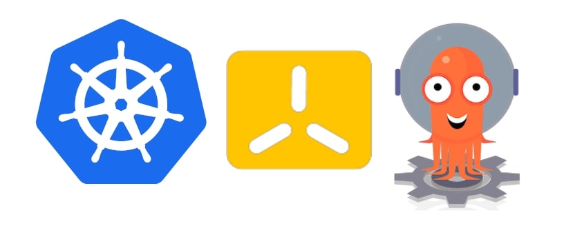
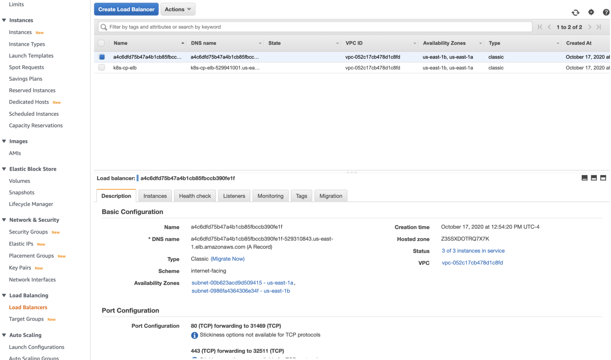
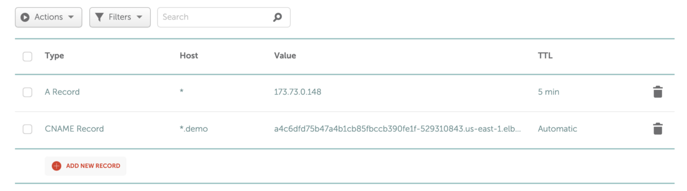
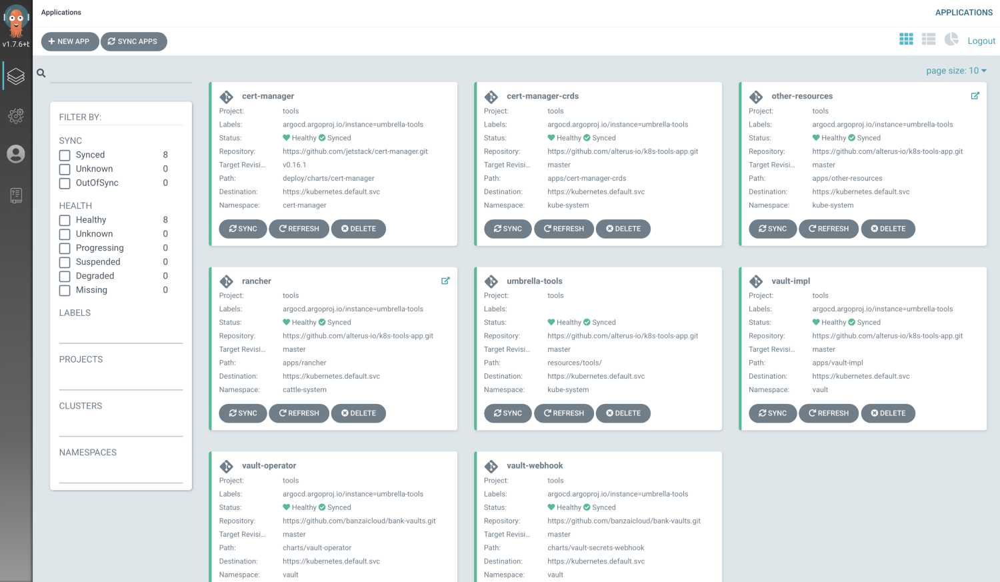
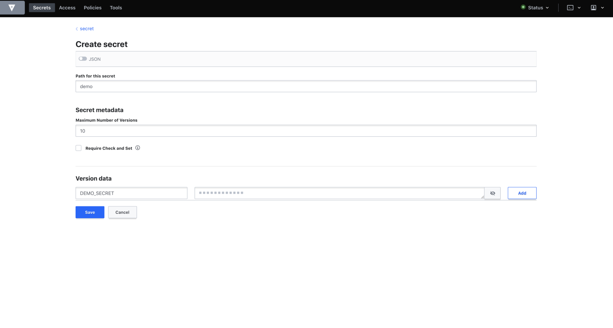
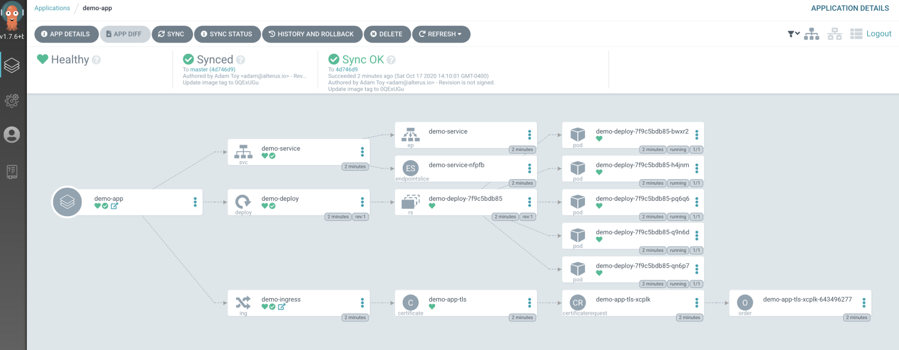
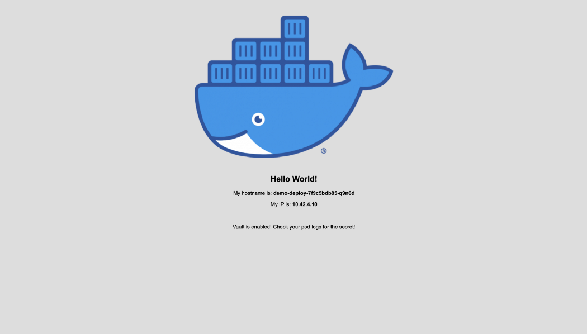
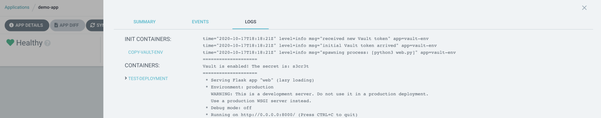
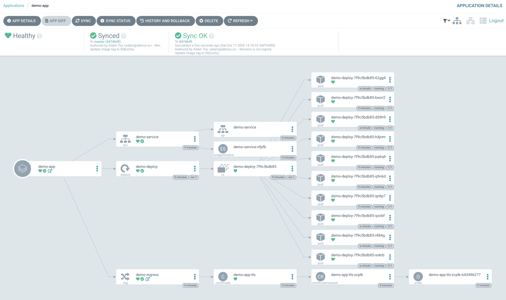

使用 AWS、k3s、Rancher、Vault 和 ArgoCD 在 Kubernetes 上集成 GitOps

随着 Kubernetes 将自己打造为容器编排的工业标准以来，为你的应用和工具寻找一条能够高效使用声明式模型的途径是成功的关键因素。这篇文章中，我将带领大家在 AWS 上设置一个 k3s Kubernetes 集群，然后集成 ArgoCD 和 Vault 创建一个安全的 GitOps。可以从这里检出基础设施代码和 Kubernetes unbrella 应用代码。
以下是我们将会使用的组件/工具:
AWS – 底层基础设施云服务方案提供商。它将管理让 Kubernetes 正常运行的虚拟机和网络。并允许通过外部世界进入集群内部。
k3s – 由 rancher 开发的一套精简版本的 Kubernetes 发行版。它清理了许多 alpha 和云插件，它还允许使用关系型的数据库（这里使用的是 RDS）以替代 etcd 作为后台存储。
Rancher – 一款以 API 驱动的可以轻松管理 Kubernetes 集群的 UI 工具。
Vault – Hashicorp 的密钥管理系统。我将会使用集成在 vault 的 Banzai Cloud 的 bank-vault，它会允许通过使用一个 Admission Webhook 的方式将密钥直接注入到 pod 中。这将大大减少你将密钥存储到 Git 仓库的需求。
ArgoCD – 一款 GitOps 工具允许你使用 Git 维护 Kubernetes 资源的状态。ArgoCD 会自动同步 Kubernetes 资源到你的 Git 仓库中，这样同样可以使集群中的配置清单手动修改后能够被自动恢复。这样能够确保你的声明式部署模型。
Cert Manager/LetsEncrypt – 提供一种为 Kubernetes 入口自动生成和更新证书的方法。
让我们从 AWS 基础设施开始吧。
前置条件
你需要安装以下 CLI 到你的系统里:
Trerraform
Kubectl
AWS
你同样需要 AWS 管理员权限和获取密钥/密码的方法。如果没有的话，使用信用卡创建一个账号即可。
最后，你需要一个主机域名用来管理/升级指向基于 Kubernetes 的 ELB。如果没有，建议你在 NameCheap 上创建一个账号然后购买一个 .dev 域名。便宜也好用。
AWS 基础设施
对于 AWS 基础设施，我们将会使用支持 S3 的 Terraform 来维持状态。这也给我们提供了一种声明式定义我们的基础设施并在我们需要时进行迭代创建变更的方法。查看基础设施仓库你会看到一个 k3s/example.tfvars 文件。我们需要为特定的环境/用例更新这个文件，设置如下值:
db_username – 管理员用户名会被应用到 Kubernetes 后端存储的 RDS 实例中。
db_password – RDS 用户的管理员密码。通常它会在 terraform apply 命令内联过程中传递此参数，简单起见，我们将它存储到文件里面。
piblic_ssh_key – 如果你需要 SSH 到 Kubernetes 的 EC2s，该值为公共的 SSH 密钥。
keypair_name – public_ssh_key 对应的密钥对名称。
key_s3_bucket_name – 当集群创建成功时用于存储 kubeconfig 文件的存储区。它在 Amazon 中是全局唯一的。
如果你想修改集群大小或者设置特定的 CIDRs，可以在下面设置一些可选字段，但是默认你会得到 6-节点（3 服务器，3终端）的 k3s 集群。
你同样需要创建一个 S3 存储区用来存储 Terraform 状态然后在 k3s/backends/s3.tfcats 和 k3s/main.tf 中修改 bucket 字段以匹配它们。
当我们更新完所有的字段以及创建完 S3 状态存储区之后，接着进行下面的操作以及应用 Terraform。首先，确保在 AWS 账户中拥有一个管理者 IAM 用户这样你可以设置环境变量或者在系统中使用 AWS API 能够访问接口的 AWS 凭据文件，然后运行下面的命令:
cd k3s/
terraform init -backend-config=backends/s3.tfvars
terraform apply -var-file=example.tfvars
上述命令执行完成后，应用成功后，Terraform 将会输出预期的 AWS 状态。你可以查看它们如果按照预期执行的请输入 yes。AWS 资源配置完成大概需要 5-10 分钟，时间大多用在了 RDS 集群上。
确认你的 Kubernetes 集群
成功应用 Terraform 之后（多花几分钟时间确认 k3s 是否已经部署进去），你需要使用如下命令从 S3 存储区中获取 kebeconfig 文件（替换你在 example.tfvars 文件中输入的存储区名字）:
aws s3 cp s3://YOUR_BUCKET_NAME/k3s.yaml ~/.kube/config
这样就完成了让你与你的集群通信的所有步骤了。然后我们查看下节点的状态。在继续下面的事情之前，请确保它们都是 Ready 状态:
$ kubectl get nodes
NAME STATUS ROLES AGE VERSION
ip-10-0-1-208.ec2.internal Ready <none> 39m v1.18.9+k3s1
ip-10-0-1-12.ec2.internal Ready master 39m v1.18.9+k3s1
ip-10-0-1-191.ec2.internal Ready master 39m v1.18.9+k3s1
ip-10-0-2-12.ec2.internal Ready master 39m v1.18.9+k3s1
ip-10-0-2-204.ec2.internal Ready <none> 39m v1.18.9+k3s1
ip-10-0-1-169.ec2.internal Ready <none> 39m v1.18.9+k3s1
同样查看下 ArgoCD 状态，它是通过配置清单自动部署进去的:
$ kubectl get pods -n kube-system | grep argocd
helm-install-argocd-5jc9s 0/1 Completed 1 40m
argocd-redis-774b4b475c-8v9s8 1/1 Running 0 40m
argocd-dex-server-6ff57ff5fd-62v9b 1/1 Running 0 40m
argocd-server-5bf58444b4-mpvht 1/1 Running 0 40m
argocd-repo-server-6d456ddf8f-h9gvd 1/1 Running 0 40m
argocd-application-controller-67c7856685-qm9hm 1/1 Running 0 40m
配置 DNS
对于 DNS，我在 NameCheap 上拥有一个 atoy.dev 的域名，但是你可以使用任何你喜欢的 DNS 提供商。我们需要做的是创建一个通用的 CNAME 条目将所有的请求路由到管理应用程序入口的 AWS ELB 上。
首先，通过 AWS 控制台 获取 Elastic 负载均衡器的主机名，转到 EC2，然后点击菜单左侧的 Load Balancers。到这里，你可以看到使用随机字符创建了一个负载均衡器。如果查看 tags，它引用了一个新的 Kubernetes 集群:

你应该想从这里拷贝 DNS 名称。对我而言，我会转到 NameCheap 域名中的高级 DNS 页面输入 CNAME 条目从而让 *.demo.atoy.dev 指向从 AWS 拷贝的 DNS 名称。你可以针对你的提供商/域名进行调整:

为了验证它是否运行，你可以安装/使用 nslookup 来确保它解析为正确的主机名:
$ nslookup test.demo.atoy.dev
Server: 71.252.0.12
Address: 71.252.0.12#53Non-authoritative answer:
test.demo.atoy.dev canonical name = a4c6dfd75b47a4b1cb85fbccb390fe1f-529310843.us-east-1.elb.amazonaws.com.
Name: a4c6dfd75b47a4b1cb85fbccb390fe1f-529310843.us-east-1.elb.amazonaws.com
Address: 52.20.5.150
Name: a4c6dfd75b47a4b1cb85fbccb390fe1f-529310843.us-east-1.elb.amazonaws.com
Address: 23.20.0.2
现在我们转到 Umbrella 应用上。
ArgoCD 和 Umbrella 应用程序
我们已经知道 ArgoCD 已经部署进去了，但是现在我们需要把剩余使用 ArgoCD App-of-Apps 部署模型的工具部署进去。因为我们使用的是 GitOps，需要从你的 GitHub 账号中 fork 出一个 k8s-tools-app 仓库，然后需要在上面进行一些变更从而兼容你的当前环境:
需要对
https://github.com/atoy3731/k8s-tools-app.git做一次全量的查找/替换变更到你 fork 出来的对应 URL 的新的 git 仓库中。这样可以让你管理自己的这套 ArgoCD 需要拉取的环境。请确保你的 Git 仓库是公开的这样 ArgoCD 可以获取到它。在
resources/tools/resources/other-resources.yaml中，将argoHost和issuerEmail修改为你自己的域名和邮箱。在
resources/tools/resources/rancher.yaml中，将hostname和email修改为你自己的域名和邮箱。在
resources/apps/resources/hello-world.yaml中，修改 2 个app.demo.atoy.dev引用为你自己的域名。
这些变更完成后，将这些变更提交/推送到你 fork 的 Github 仓库中。现在你已经准备好应用这个 umbrella 应用程序了。在你已经 clone 的仓库中执行如下操作:
$ kubectl apply -f umbrella-tools.yaml
appproject.argoproj.io/tools created
application.argoproj.io/umbrella-tools created
这样，ArgoCD 的魔力开始了，将其他工具添加到之前为集群定义的仓库中。你可以使用下面命令得到已部署应用的列表:
$ kubectl get applications -n kube-system
NAME AGE
other-resources 56m
umbrella-tools 58m
rancher 57m
vault-impl 57m
vault-operator 58m
vault-webhook 57m
cert-manager 57m
cert-manager-crds 58m
你将有大概 5 分钟的时间等待所有内容准备完成并让 LetsEncrypt 生成临时证书。所有运行正常的话，你可以看到生成了 2 个可以通过浏览器访问的入口:
$ kubectl get ingress -A
NAMESPACE NAME CLASS HOSTS ADDRESS PORTS AGE
cattle-system rancher <none> rancher.demo.atoy.dev a4c6dfd75b47a4b1cb85fbccb390fe1f-529310843.us-east-1.elb.amazonaws.com 80, 443 59m
kube-system argocd-ingress <none> argo.demo.atoy.dev a4c6dfd75b47a4b1cb85fbccb390fe1f-529310843.us-east-1.elb.amazonaws.com 80, 443 58m
现在你可以通过 https://rancher.YOUR-DOMAIN 访问 Rancher 通过 https://argo.YOUR-DOMAIN 访问 ArgoCD。
注意事项 1: 为了避免来自 LetsEncrypt 的速率限制，我们使用的临时证书并不是一个有效的证书。这样会给你使用浏览器访问 Argo、Rancher 或其他 hello-world 应用程序跳过 SSL 验证提供了机会。使用 Chrome，当例外页面输入 thisisunsafe 就会跳过它。你也可以更新为 cert-manager 使用的 ClusterIssuer 来使用产品级的受信任的证书。
注意事项 2: K3s 预装了 Traefik 作为入口控制器，所以我们使用它来简化操作。
注意事项 3: 第一次进入 Rancher，你需要生成一个密码和接受一个用来访问 Rancher 的 URI。URI 在页面中已经预加载出来了，你只需要点击 Okey 即可。
注意事项 4: 为了登录到 ArgoCD，它使用 admin 作为用户名，argocd-server pod 名称作为密码。你可以通过执行如下操作获取 pod 名（本例中名称为 argocd-server-5bf58444b4-mpvht）:
$ kubectl get pods -n kube-system | grep argocd-server
argocd-server-5bf58444b4-mpvht 1/1 Running 0 64m
现在你可以转到 ArgoCD UI 界面了，会看到下面类似的界面:

现在我们的工具均部署完毕了，让我们在 Vault 上存储为我们的 hello-world 程序需要提取的密钥。
在 Vault 上创建一个密钥
为了让事情更容易一些，在工具仓库中有一个帮助脚本。运行下面命令来获取你的 Vault admin 令牌和 port-forward 命令:
$ sh tools/vault-config.sh
Your Vault root token is: s.qEl4Ftr4DR61dmbH3umRaXP0Run the following:
export VAULT_TOKEN=s.qEl4Ftr4DR61dmbH3umRaXP0
export VAULT_CACERT=/Users/adam.toy/.vault-ca.crt
kubectl port-forward -n vault service/vault 8200 &You will then be able to access Vault in your browser at: [https://localhost:8200](https://localhost:8200/)
运行命令的输出如上所示，然后转到 https://localhost:8200。输入上面的 root token 登录。
登录后，你应在 Secret Engine 页面。点击 secrets/ 入口然后点击右上方的 Create Secret。我们将创建一个 demo 密钥，所以在下方图片中输入信息然后点击 Save:

现在你有一个为你的 hello-world 提取的密钥了。
部署 Hello World 应用程序
回到仓库的上一级目录，运行下面的命令用来部署 hello-world 应用程序:
$ kubectl apply -f umbrella-apps.yaml
appproject.argoproj.io/apps created
application.argoproj.io/umbrella-apps created
创建完成后，转到 ArgoCD UI 你应该会看到两个新的应用程序 umbrella-apps 和 demo-app 。点击 demo-app 等待所有资源变成健康的状态:

变成健康状态后，你可以通过 https://app.YOUR-DOMAIN 访问到你的应用程序:

我们也确认了 Vault 密钥已经注入到我们应用程序的 pods 当中了。ArgoCD UI 中的 demo-app，点击你应用程序中的其中一个 pod，然后点击顶端的 Log tab 页。左侧应该会有 2 个容器，所以选择 test-deployment 容器。在日志开始，你会看到密钥显示在两行等号中间:

测试 GitOps
现在让我们来测试下 ArgoCD 从而确保当我们的仓库产生一些变更的时候它可以自动同步。
在工具仓库中，找到 resources/apps/resources/hello-world.yaml 将 replicaCount 从 5 改成 10。将变更推送到 master 分支，然后转到 ArgoCD UI 的 demo-app 处。当 ArgoCD 到了更新周期，它会自动启动部署 5 个我们的应用程序副本（如果你不想等的话，可以在 Argo 的 umbrella-apps 应用程序中使用 Refresh 按钮）:

清理
如果你准备清理集群了，首先到 AWS 控制台，EC2 service，点击 Load Balancers。有一个 Kubernetes 云提供商创建但没有被 Terraform 管理的 ELB 需要清理。同样需要删除 ELB 使用的 Security Group。
清理完 ELB 之后，运行下面的命令然后在出现提示处输入 “yes”:
terraform destroy -var-file=example.tfvars
接下来做什么？
太棒了！这样我们就有一整套使用 GitOps 部署应用程序的工具链了。下一步要做些什么呢？如果你准备好迎接新的挑战了，除了 hello-world 应用程序之外尝试部署一下自己的应用程序，甚至通过集成 CI/CD 在应用程序配置清单仓库中更新镜像 tag。这样的话，当一个新的应用程序镜像被构建完成，新的 tag 会自动更新到配置清单仓库中，ArgoCD 将会自动部署新的版本。
希望你能享受本篇文章并能从中学到一些东西！感谢您的阅读。